O raro perfil que une a sensibilidade humana da comunicação ao poder de escala da Inteligência Artificial. Desenvolvo sistemas, CRMs, Agentes IA e campanhas audiovisuais que garantem resultados imbatíveis.
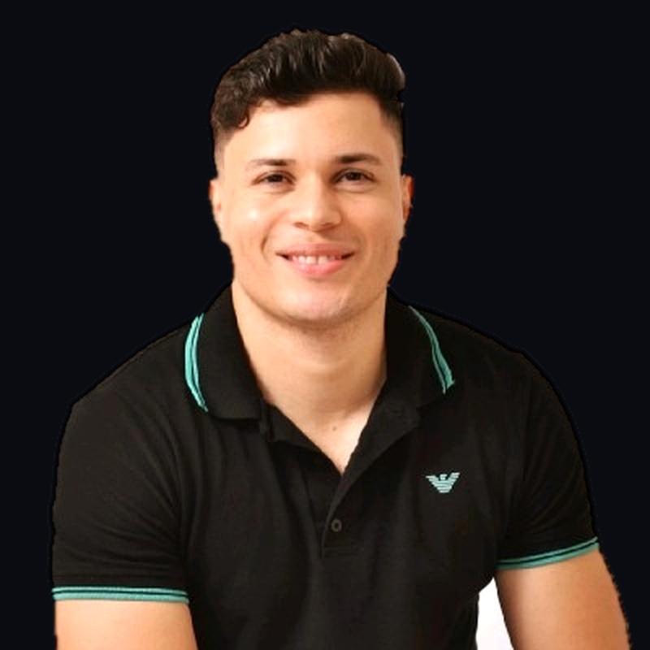
Experiência
10+ Anos
10+
Anos de Experiência
50+
Automações Entregues
2
Produtos SaaS Ativos
100%
Projetos no Prazo
Formação
Bacharel em Comunicação
Universidade UNOPAR Muriaé
Localização
Muriaé – MG, Brasil
Disponível Remotamente
Sobre Mim
Sou Evandro Silva Gallina, um profissional multidisciplinar com um background único: a rara interseção entre Comunicação Institucional, Gestão Pública e Engenharia de IA.
Ao contrário de desenvolvedores tradicionais, minha origem na Gestão de Juventude e Comunicação me treinou para entender de pessoas, narrativas e engajamento. E ao contrário de comunicadores tradicionais, eu possuo o conhecimento técnico avançado para construir infraestruturas de IA, CRMs, SaaS e Agentes Autônomos de Atendimento.
Eu não entrego apenas código ou apenas vídeos. Eu entrego soluções completas. Desde a roteirização criativa para engajar o público no audiovisual até a arquitetura de automações de atendimento (RAG) que escalam a sua operação. Ter meu perfil em uma equipe é garantir que a tecnologia será sempre usada para potencializar a experiência humana com resultados reais.
Gestão Pública
Faculdade UNOPAR
Gestão de Projetos
Experiência Municipal
IA & Automação
n8n, Python, OpenAI
Audiovisual & Design
Fotografia + Branding
Habilidades Essenciais
Criação de ecossistemas complexos (n8n, Python, APIs) que multiplicam os resultados operacionais da sua equipe sem aumentar custos.
Arquitetura de assistentes cognitivos e fluxos de atendimento que interagem 24/7 com máxima personalização.
Do roteiro criativo à edição final. Vídeos que prendem a atenção e viralizam organicamente.
Mais de uma década gerindo Políticas Públicas
Criação de aplicativos e plataformas reais, com foco na experiência do usuário e banco de dados escaláveis.
Onde tudo se conecta. Transformar dados frios e burocracia em narrativas que engajam e convertem.
Minha Trajetória
Campanha Wilder Morais | Governo de Goiás
Atuação direta na linha de frente da equipe de mídia digital coordenada pelo Professor Marcelo Vitorino. Condução da narrativa digital em ambiente de altíssima exigência estratégica, multiplicando a presença e o crescimento do candidato nas pesquisas eleitorais.
DEMSUR / Prefeitura de Muriaé/MG
Colaborador no setor de comunicação institucional do Departamento Municipal de Saneamento Urbano e da Prefeitura de Muriaé, aplicando estratégias de marketing com uso de IA para modernizar os processos de comunicação.
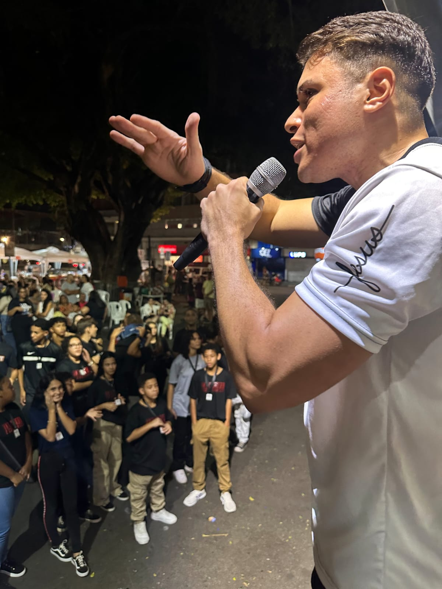
FUNDARTE – Muriaé/MG
Planejamento e execução de políticas públicas culturais e gestão de eventos municipais de grande porte. Destaque para a atuação no Dia do Muriaeense.
FUNDARTE – Muriaé/MG
Implementação de projetos de engajamento juvenil e coordenação de programas educacionais inovadores. Palestrante na V Conferência Municipal de Juventude.
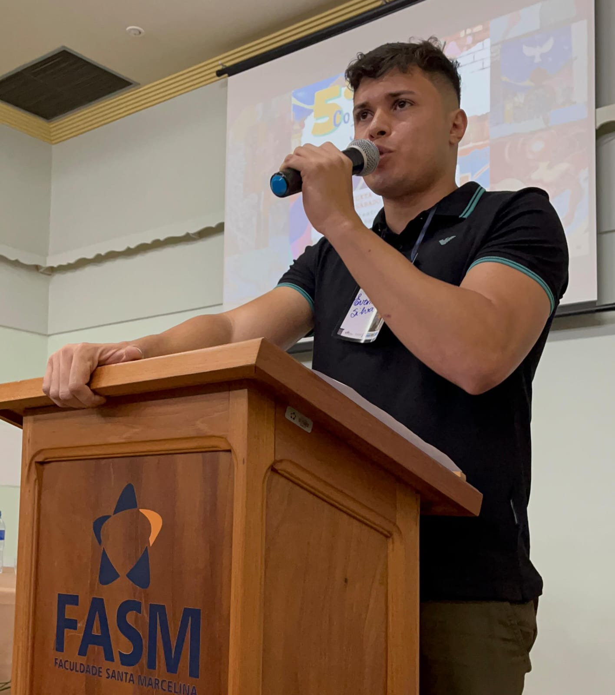
Convocado para atuar no QG em Goiânia na campanha para o Governo do Estado de Wilder Morais, integrei a equipe de mídia digital sob liderança direta do Professor Marcelo Vitorino — referência nacional absoluta em estratégia de marketing político.
Uma operação em ambiente de altíssima exigência, onde assumi desde a coordenação operacional de equipes criativas e reportagem na rua, até o pioneirismo em fluxos audiovisuais por Inteligência Artificial que aceleraram a entrega e reduziram custos de produtoras.
Trabalhar lado a lado com o Professor Marcelo Vitorino consolidou minha maturidade estratégica. No calor de uma campanha política com disputas minuto a minuto, não há espaço para amadorismo: cada roteiro, cada corte de vídeo e cada post precisa comunicar autoridade, gerar empatia e mobilizar votos.
2 Meses
Operação Intensa
360°
Rua, Set & Redação
IA Real
Custo de Produtora ↓
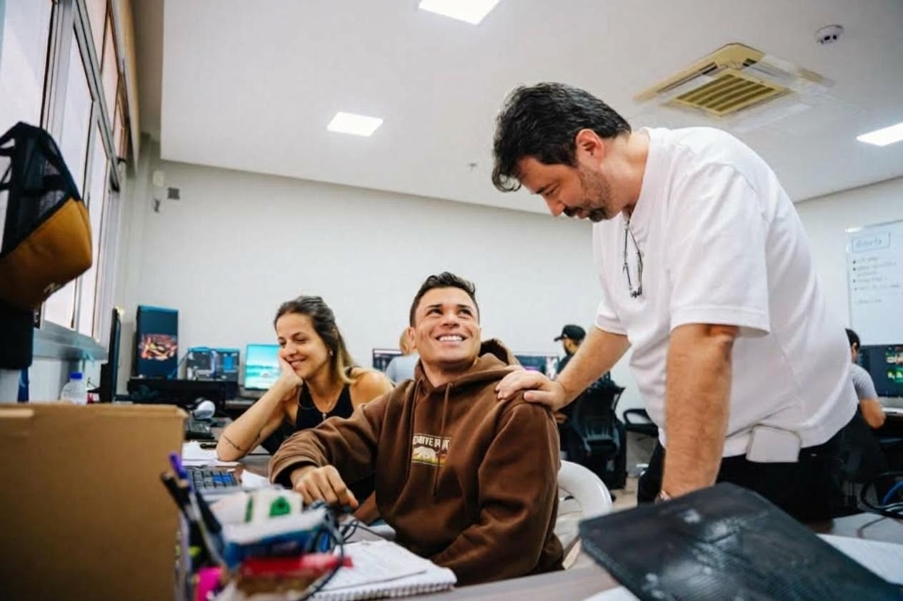
Evandro Silva & Prof. Marcelo Vitorino
QG de Campanha Digital • Goiânia/GO
Liderança e briefing contínuo para editores de vídeo, designers gráficos e filmmakers, garantindo ritmo frenético de entregas sem perder a identidade visual do candidato.
Atuação em campo: apresentação direta em vídeo, entrevistas de rua com o cidadão e cobertura instantânea de comícios e carreatas com linguagem dinâmica.
Escrita de roteiros estratégicos, ganchos de retenção nos primeiros 3 segundos e concepção de carrosséis explicativos sobre propostas de governo para viralização.
Geração de assets e finalização com auxílio de Inteligência Artificial, substituindo gargalos de produtoras pesadas e entregando criativos em tempo recorde.
Bastidores da Linha de Frente
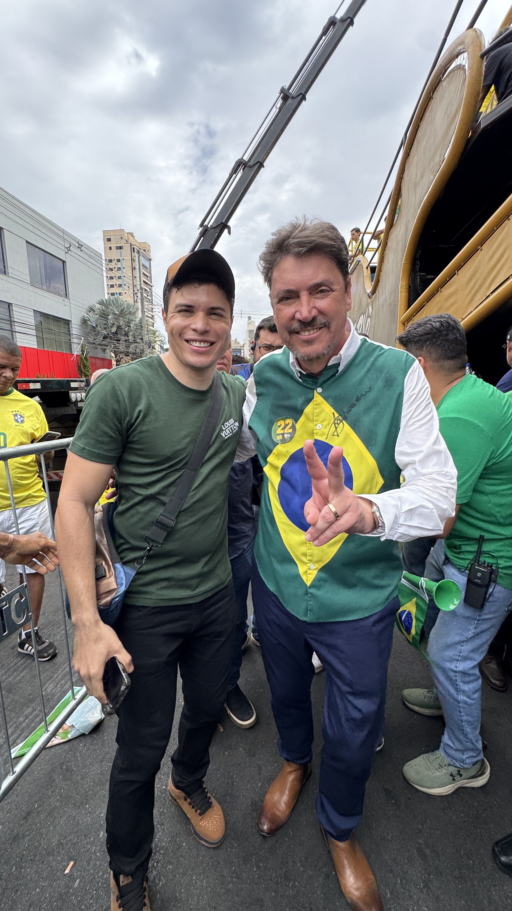
Com Wilder Morais (atual Senador da República)
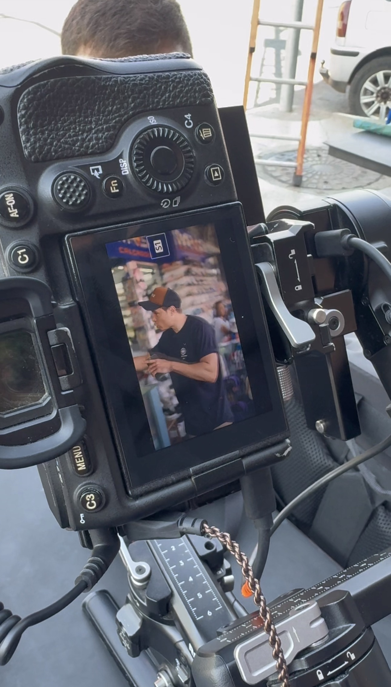
Cobertura de rua e condução de entrevistas dinâmicas
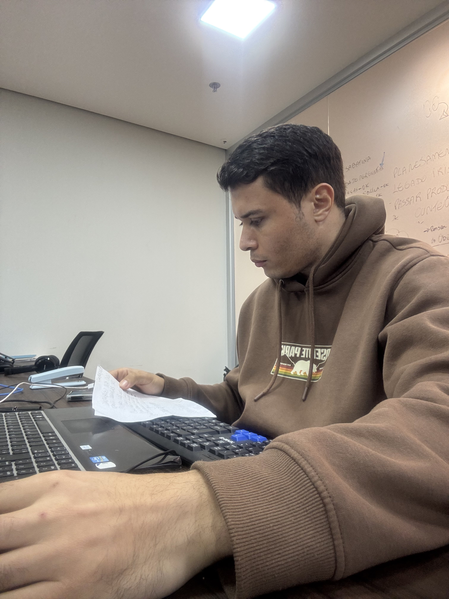
Gravações de estúdio e alinhamento de equipamentos
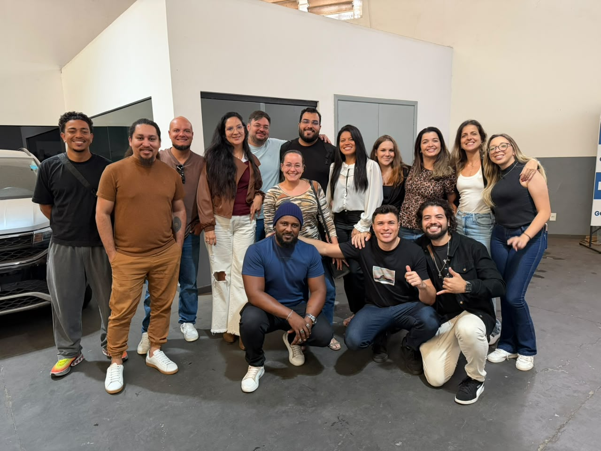
Direção de set e acompanhamento de filmagem
Vídeos estratégicos veiculados no Instagram oficial do candidato, acumulando milhares de visualizações e engajamento orgânico.
Portfólio de Soluções
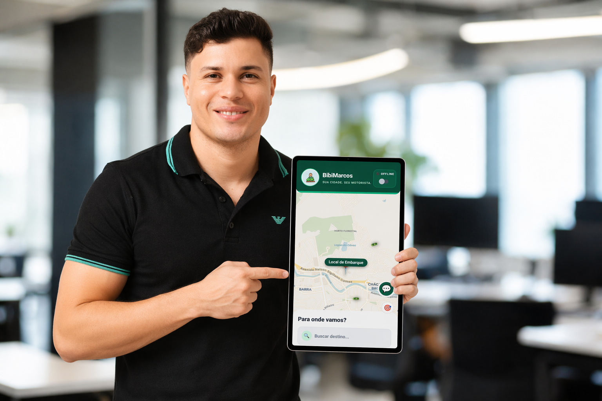
Ecossistema de mobilidade focado em Muriaé-MG com arquitetura de mapeamento independente. Conta com engenharia de alta performance "Zero-Crash", 100% de lucro repassado ao motorista local e cálculo de tarifas via Edge Computing. Uma verdadeira transformação na gestão pública através da soberania tecnológica.
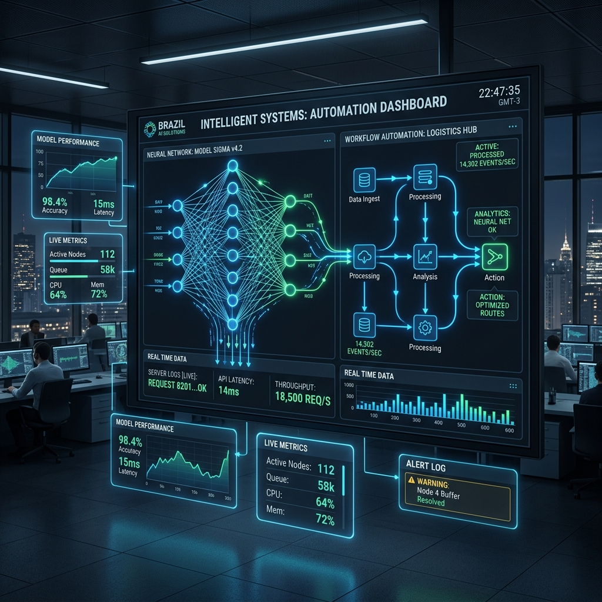
Infraestrutura avançada de agentes inteligentes integrada a processos empresariais reais. Fluxos de atendimento, CRM, geração de conteúdo e gestão operacional 100% automatizados. Redução de até 70% no esforço manual dos clientes.
Explorar Agência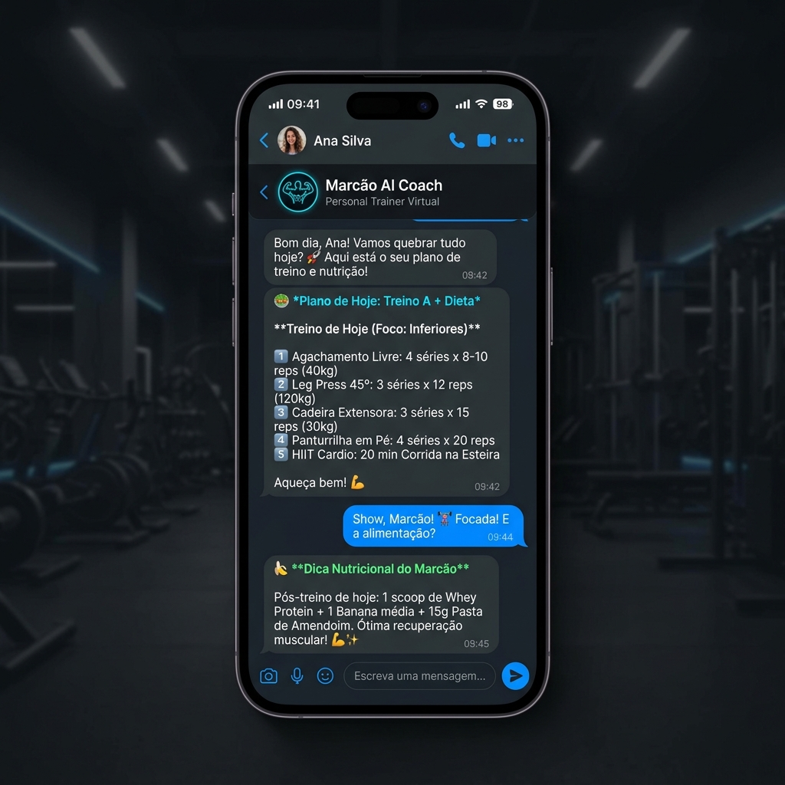
Plataforma SaaS de fitness com IA integrada via WhatsApp. O usuário recebe planos de treino e dieta personalizados por GPT-4, com análise de progresso, lembretes automáticos e coaching contínuo — tudo sem abrir nenhum aplicativo.
Visitar PlataformaA comunicação do setor público não precisa ser burocrática ou entediante. Através da roteirização criativa, direção assertiva, captação audiovisual e edição dinâmica, transformo informações institucionais complexas (como obras e serviços públicos) em conteúdos acessíveis, atrativos e com alto potencial viral.
Essa abordagem moderna, semelhante à utilizada por grandes marcas como Netflix e L'Oréal, quebra barreiras, gera empatia com o cidadão e garante um engajamento orgânico massivo nas redes sociais da Prefeitura.
Coordenador de Políticas Públicas de Juventude (2021-2024)
Entre 2021 e 2024, as Políticas Públicas de Juventude em Muriaé passaram por uma profunda transformação estrutural. A gestão descentralizou suas ações, ocupando praças, escolas e bairros periféricos para aproximar o poder público das reais necessidades da população jovem.
Esta atuação destacou-se por dar voz a expressões urbanas marginalizadas, estruturar canais de saúde mental e diversidade, e recolocar a cidade no mapa das grandes discussões democráticas do estado.
Mapeamento e fortalecimento de artistas urbanos periféricos, conectando-os à profissionalização.
Combate ao racismo estrutural através de documentários que exaltam jovens referências negras locais.
Fomento do skate urbano, breaking, batalhas de rimas e economia criativa nas praças.
Acolhimento e rodas de conversa psicossociais preventivas no período pós-pandemia.
Pioneirismo na acessibilidade cultural e de lazer para jovens PcD (Pessoas com Deficiência).
Debates descentralizados sobre direitos humanos, diversidade e cidadania na rede de ensino.
A consagração do processo de participação popular e do Estatuto da Juventude no Anfiteatro da FASM.
1. Pré-Conferências
Escuta nos bairros
2. V Conferência
Aprovação de propostas
3. Posse de Delegados
Representação Estadual
Cobertura das intervenções culturais e eventos sociais que mobilizaram a juventude.